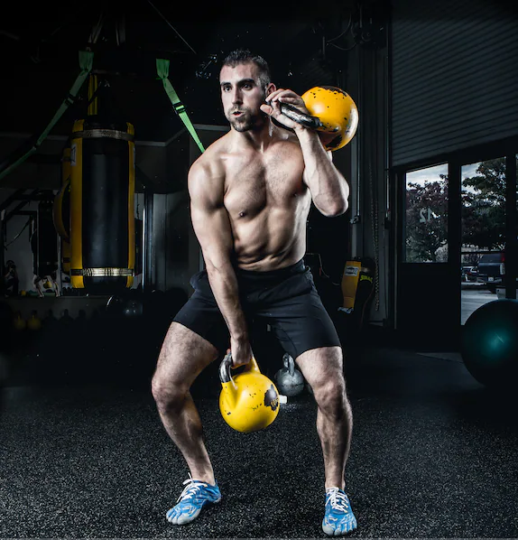

B242 · Advanced Kettlebell Exercise Tutorial! - Double Gorilla Clean
Hi {first_name},
When it comes to my favorite advanced kettlebell exercises, five that immediately come to mind are as follows:
1. Double Kettlebell Gorilla Clean 2. Single Kettlebell Countered Sling Shot 3. Double Kettlebell Half Snatch 4. Single Kettlebell Olympic Swing 5. Double Kettlebell Sotts Press
Each one of the above exercises requires excellent technical proficiency and are total-body, multi-pattern movements. Master these five, and you will be more fit, mobile, and strong than you could have ever have imagined.
Likely a few of these exercises you may not recognize initially, as I have taken elements of classic movements, incorporated aspects that I felt I needed to up-level my performance, and also make them more fun to learn.
To help you dive into some of these movements optimally, I have an rad update. While I've been meaning for years to re-enliven my Youtube Channel, it's never been a priority, until now! : )
I'm super excited to share with you that every Wednesday my plan is to release one new video covering technique training, workouts, tips, interviews and more on Kettlebells, Bulgarian Bags, and other topics pertaining to holistic performance training.
This week covers a breakdown of the Double Kettlebell Gorilla Clean.
 Click here to watch the full tutorial now.
This is one particular movement that I've used often over the years when coaching athletes needing to develop the qualities of power and power endurance.
In the video I break down the top three elements to ensure it's success: 1. Maintaining an upright torso position 2. Focus on the raising arm 3. Sync the breath with the movement
Click here to watch the full tutorial video
Also, please subscribe to my Youtube channel so you can get weekly free content that will leave you looking, feeling, and performing one another level!
Wishing you a fantastic Wednesday! Mike
P.S. Stay tuned for next week's video where I cover the Kettlebell Countered Sling Shot! This is hands down one of the exercises I've been working on most in the last year and is an excellent one to building your rotational kettlebell exercise arsenal. This movement has elements inspired from my work with Suples Training Systems (the inventors of the Bulgarian Bag), and I can guarantee you how you'll feel after performing it well is going be incredible. It does take time to master, however, in the tutorial video I'll set you up for success and teach you the developmental elements you'll need to perform it at the highest level. |